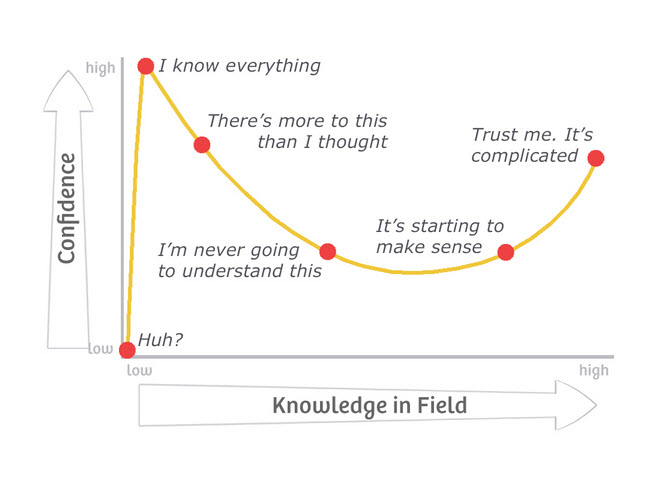

Many drive-by visitors to Metallicman often raise their noses and proclaim “I’ve seen it all before”, and then leave. They don’t stick around and really study what is being presents. They just assume that it’s just another ‘same old”, “same old”, and thus not worthy of their time.
A lesser person might be upset.
But I know, and most long time MM readers know, that this is all an illusion.
The people who come and stay are here for the content, and the juicy nuggets of gold that you won’t find anywhere else.
Arthur Schopenhauer famously observed that talent hits a target that no one else can hit, but genius hits a target that no one else can see.
We now know that, through the Dunning-Kruger effect, each of us is limited by cognition: anything more complex than our minds can grasp appears as ludicrous bizarre gibberish to us.
Let. That. Sink. In.
Can you fly a “Frisbee”? If not, then why?
Knowledge and skills are learned. And that includes the ability to reason, to plan, and to sort things out.
This creates a framework of genius as that which notices the obvious but ignored. As explained in the biography of a famous gun designer, high cognitive ability seems mystifying until the results are seen:
It is often said in the industry that small arms now are designed by committee. But the design process will always need that one unique person, the imaginative individual with a new way of looking at a problem.
Eugene Stoner was the man with the ideas who passed them on to the design committees. According to a long-time friend and colleague, Stoner was “the master of the obvious”. “When he came up with an idea you would ask yourself, ‘Why didn’t I think of that?’ But you didn’t.”
Most people cannot see genius.
To them, it appears as an oddity, something incomprehensible, and when it succeeds, they hate it. The last three centuries in the West have been a rebellion against genius, replacing it with inferior substitutes like navel-gazing novels, pop culture, and modern art.
Face it.
People who have genius capability are shunned and thwarted in society.
Yet, early on, Western Civilization succeeded because it embraced genius. Under the kings, those of great potential were subsidized so that all could enjoy their insights.
Not so today.
Under democracy, they are treated with suspicion and thrust into the workforce, where they often flounder. Individual genius is a fast train ticket to oblivion and poverty.
If we are to rise again, much of our focus must be on finding good people instead of trying to regulate mediocre people with complex systems in the Asiatic model. In the meantime, it helps to recognize that genius is most commonly unrecognized except by those on its level.
The Dunning-Kruger effect
The Dunning–Kruger effect is a hypothetical cognitive bias stating that people with low ability at a task overestimate their ability. As described by social psychologists David Dunning and Justin Kruger, the bias results from an internal illusion in people of low ability and from an external misperception in people of high ability; that is, "the miscalibration of the incompetent stems from an error about the self, whereas the miscalibration of the highly competent stems from an error about others". It is related to the cognitive bias of illusory superiority and comes from people's inability to recognize their lack of ability. Without the self-awareness of metacognition, people cannot objectively evaluate their level of competence.
-Wikipedia
The Dunning-Kruger effect states that incompetent people are also incompetent in assessing their own performance.
Let. That. Sink. In.
Therefore, less competent people think their performance is competent, while smarter people focus on their own flaws.
It explains, among other things, how in a society that places too much value on image, idiots and insane people are able to get ahead by overestimating their value and getting fools to agree with them.
The essence of the Dunning-Kruger effect is that “ignorance more frequently begets confidence than knowledge.”
Studies have shown that the most incompetent individuals are the ones that are most convinced of their competence.
At work this translates into lots of incompetent people who think they are superstars.
And what is worse is that if you have a manager that doesn’t closely supervise work, he or she may judge performance based on outward appearances using information like the confidence with which these incompetent blockheads speak.An important corollary of this effect is that the most competent people often underestimate their competence.
This is a result of how you frame knowledge.
The more you know, the more you focus on what you don’t know. For instance, people who can name 15 of the 50 state capitals tend to think “I know 15.” People who know 45 of the 50 state capitals tend to think “I don’t know 5.”1
Dunning and Kruger, two researchers at Cornell University, described their findings in a paper entitled “Unskilled and Unaware Of It: How Difficulties In Recognising Ones Own Incompetence Lead To Inflated Self-Assessments” in the Journal of Personality and Social Psychology.
Their conclusions can be summarized this way:
Incompetent individuals…
- Tend to overestimate their own level of skill,
- Fail to recognize genuine skill in others,
- Fail to recognize the extremity of their inadequacy,
- If they can be trained to substantially improve their own skill level, these individuals can recognize and acknowledge their own previous lack of skill.
Translation:
Without leadership at the top of the curve who is willing to call people on their incompetence, the incompetents will appear competent to other incompetents and be advanced, possibly even to the presidency.
This causes a mathematical problem for democracies since most people are not particularly competent at leadership, government or logical argument, meaning they are both unable to assess the best leadership choices and sure that they’re right.
It’s essentially similar to the Downing effect:
One of the main effects of illusory superiority in IQ is the Downing effect. This describes the tendency of people with a below average IQ to overestimate their IQ, and of people with an above average IQ to underestimate their IQ.
The propensity to predictably misjudge one’s own IQ was first noted by C. L. Downing who conducted the first cross-cultural studies on perceived ‘intelligence’.His studies also evidenced that the ability to accurately estimate others’ IQ was proportional to one’s own IQ. This means that the lower the IQ of an individual, the less capable they are of appreciating and accurately appraising others’ IQ. Therefore individuals with a lower IQ are more likely to rate themselves as having a higher IQ than those around them. Conversely, people with a higher IQ, while better at appraising others’ IQ overall, are still likely to rate people of similar IQ as themselves as having higher IQs.The disparity between actual IQ and perceived IQ has also been noted between genders by British psychologist Adrian Furnham, in whose work there was a suggestion that, on average, men are more likely to overestimate their intelligence by 5 points, while women are more likely to underestimate their IQ by a similar margin.2
That tendency could go a long way toward explaining why many successful societies have relied on strong leaders who had no problem beating down the incompetent with force.
Unless suppressed, the 90% of humanity who per the “Bell Curve” are unskilled and unaware of it will take over and, being incompetent, run society into the ground.
In addition, while people can be taught specific tasks, they cannot be taught to reason in general; education does not raise IQ and in the process of trying, becomes dumbed-down to the point where no one intelligent will get any benefit from it, which discriminates against the intelligent.

Conclusion
The conclusion is obvious.
When you combine the Bell Curve, the Dunning-Kruger and Downing effects, and the natural tendency of human beings to compromise, you have a working explanation why human societies inevitably begin the pursuit of a “race to the bottom” once they become powerful enough to stop losing so many people to natural events, disease and war.
A case in point is the United States…
- Women detail drug use, sex and payments after late-night parties with Gaetz…
- Associate cooperating with prosecutors in probe of congressman…
- The Fed is ‘overwhelmingly’ white and male and needs to change, study says…
- CNN Staffer Duped Into TINDER Dates With PROJECT VERITAS Spy…
- Jagger Sends Up Anti-Vaxxers in Surprise New Covid Song…BILL GATES IS IN MY BLOODSTREAM…